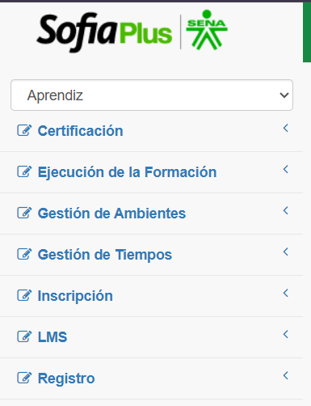
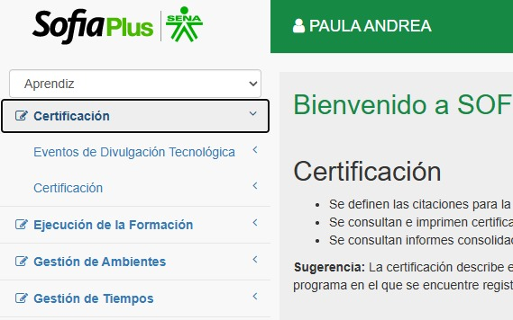
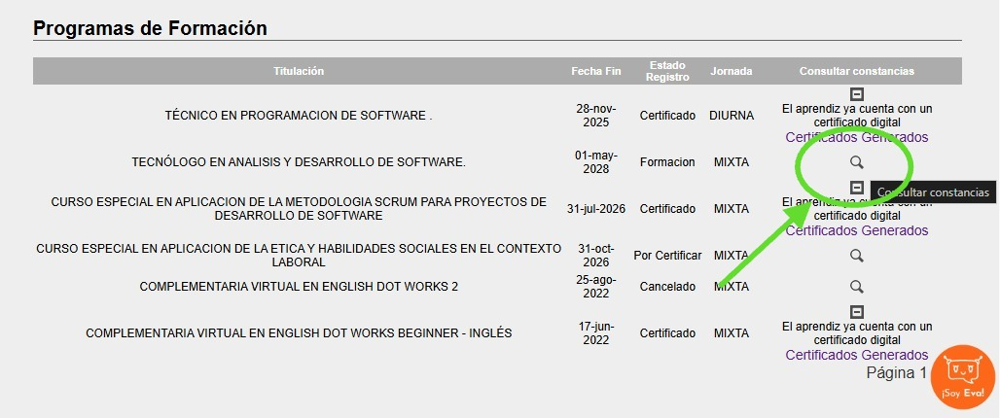

SOFIA Plus es una plataforma del SENA que permite consultar información relacionada con los programas de formación, los datos del aprendiz y diferentes trámites académicos.
* Verifica que tus datos estén escritos correctamente.
* No compartas tu contraseña con otras personas.
* Consulta regularmente la información relacionada con tu formación.
* Guarda tus datos de acceso en un lugar seguro.
* Si tienes problemas para ingresar, consulta los canales oficiales de atención del SENA.
¿Cómo consultar tus notas en SOFIA Plus?
Dentro del portal de SOFIA Plus seleciona el rol "Aprendiz"

despues de seleccionar APRENDIZ seleccionamos Certificacion donde nos mostrara estos items

Le damos click donde dice certificacion y despues donde dice CONSULTAR CERTIFICACION APRENDIZ, donde se desplegara nuestras notas.

Despues de que le des click a la lupa se te desplegara estas opciones, en la cual puedes descargar una constancia de estudio de esa formacion o tus notas del trimestree de esa formacion.